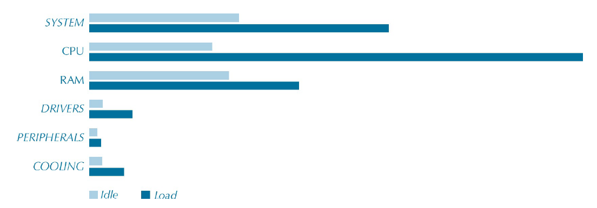

En la imagen puede observarse cómo se distribuye el gasto energético de un equipo concreto por componentes. Dependiendo del tipo de equipo, el gasto puede variar puesto que no es lo mismo, por ejemplo, el gasto de un Intel Core i7 que el de un Intel Celeron.

Distribución del gasto por componentes de un equipo microinformático de sobremesa.
Y es que el gasto de un equipo siempre es muy relativo. Depende del uso que se le dé, gastará más o menos. Un equipo poco optimizado puede ralentizarse mucho y, por lo tanto, su gasto será mayor.